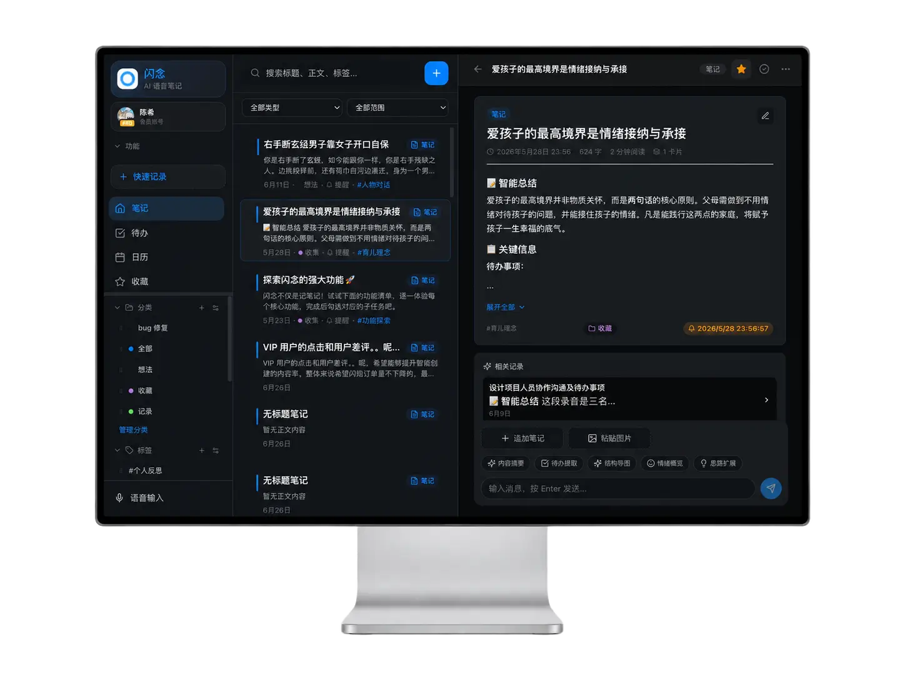

产品 · 桌面端
在电脑上把灵感整理成长期笔记
会议复盘、长文整理、搜索归档——桌面端适合深度工作。支持 Windows、macOS、Linux，浅色与深色界面均可。

桌面主界面

浅色模式

深色模式
桌面端适合做什么
- 处理会议录音转写后的长笔记
- 搜索、标签筛选与归档
- 阅读 AI 总结、核对待办并继续编辑
- 与手机、手表端保持同一账号同步
平台与安装包
- Windows：安装版 Setup / 便携版 Portable
- macOS：Apple Silicon DMG（首次打开请按安装指引操作）
- Linux：DEB / AppImage（arm64）